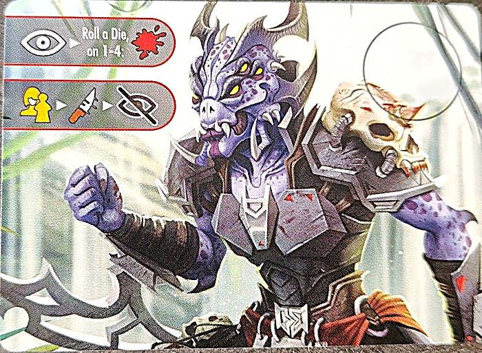
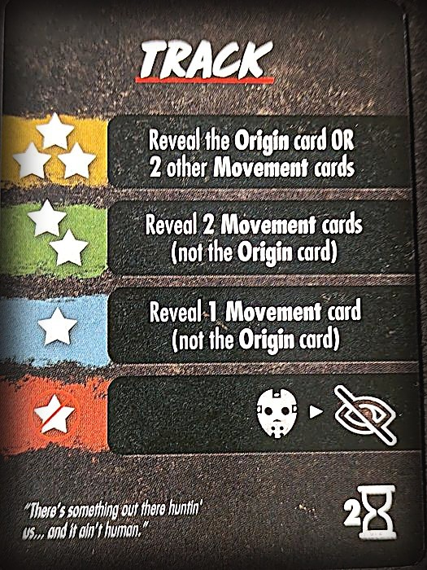
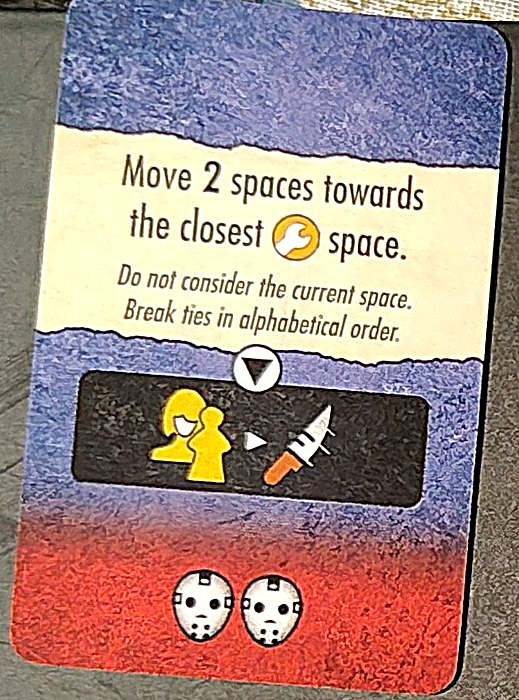
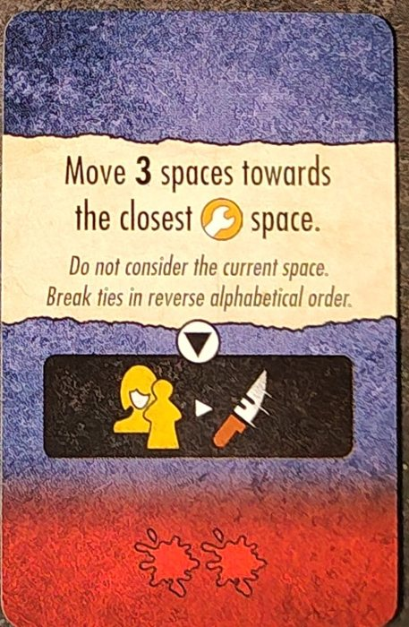
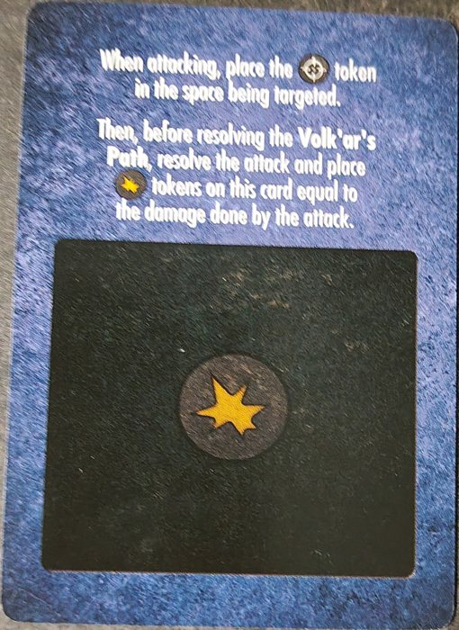
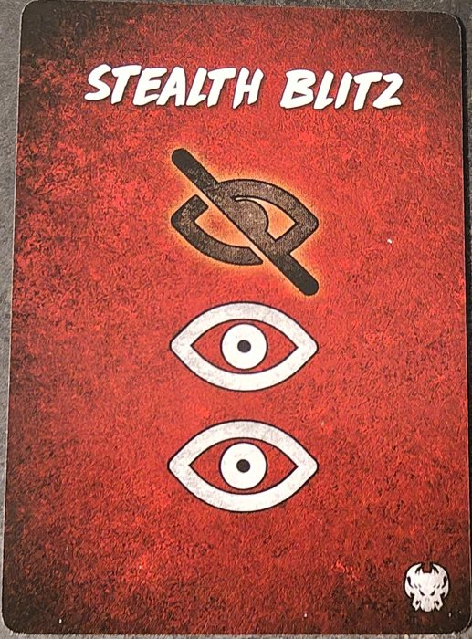
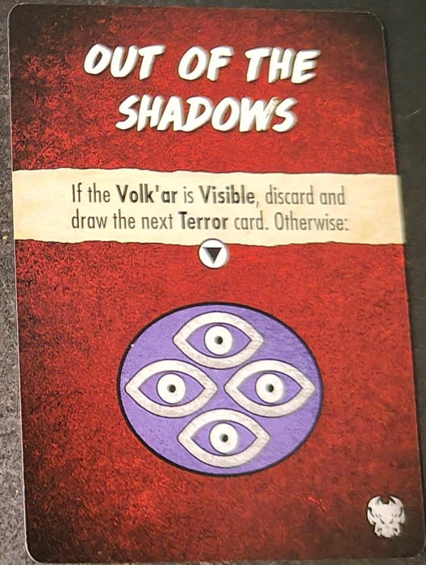
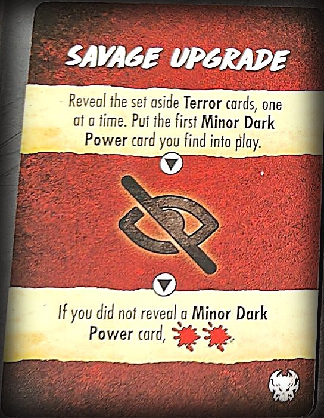

Box · S4·F4 · 49 Partien
The Green Terror75,5 % Siegquote
🇪🇸 ES · 🇬🇧 EN · 🇫🇷 FR · 🇩🇪 DE · 🇮🇹 IT
📖 Guide zu Volk'ar (Killer) · Guide zu Pesadilla Verde (Ort)
Volk'ar auf Pesadilla Verde. In 49 erfassten Partien wird in 75,5 % der Fälle gewonnen, 10,2 Punkte über dem Spielschnitt (65,3 %).
Kleine Stichprobe
Nur 49 erfasste Partien. Aufgeteilt auf Dark Powers, Finales und Setups bleiben je Auswertung sehr wenige: eher ein Hinweis als ein Fakt.
Was sie besonders macht
Verborgene Bewegung: Volk'ar steht nicht auf dem Plan, sie zieht über einen Path aus Bewegungskarten. Das Auge  legt eine Karte offen (du weißt, wohin sie geht); das durchgestrichene Auge
legt eine Karte offen (du weißt, wohin sie geht); das durchgestrichene Auge  verdeckt. Sie taucht auf mit dem Reveal-Symbol
verdeckt. Sie taucht auf mit dem Reveal-Symbol  , bei der 6. Path-Karte oder wenn du sie verletzt. Greifst du das falsche Feld an, lauert sie dir auf. Der einzige Killer mit verborgener Bewegung im Spiel, sehr spannend. Aber die Community warnt: Verborgene Bewegung kommt zu einem ohnehin komplexen Ablauf hinzu, und das Spielfeld ist schwer zu lesen. Einer der regelanspruchsvollsten.
, bei der 6. Path-Karte oder wenn du sie verletzt. Greifst du das falsche Feld an, lauert sie dir auf. Der einzige Killer mit verborgener Bewegung im Spiel, sehr spannend. Aber die Community warnt: Verborgene Bewegung kommt zu einem ohnehin komplexen Ablauf hinzu, und das Spielfeld ist schwer zu lesen. Einer der regelanspruchsvollsten.
| Schwierigkeit | Experte |
| Die Karte | Flusssystem, trainierbare Soldaten-Opfer |
So funktioniert Volk'ar
- Hauptmechanik ist verdeckte Bewegung: Statt des Meeples werden Origin-Marker und verdeckte Movement-Karten genutzt.
- Du greifst den Path (mögliche Bewegung) an; sein Standort wird nur aufgedeckt, wenn der Angriff Schaden verursacht.
- Nutzt Track-Action-Karten im Action Tableau und die Attack-Resolution-Karte.
Zusammengefasst aus der Seite im Final Girl Wiki (CC BY-SA).
Die Karte: Pesadilla Verde
18 Felder und 2 Ausgänge (Nordwesten und Südosten, die Cave). Suchfelder: Ancient Ruins, Rebel Camp und Supply Depot; weitere benannte Felder: Waterfall, Upper River, Central River, Lower River (diese vier bilden den River), Cursed Temple, Clearing und Cave.
- Das Feld mit dem Huey-Marker ist ein Ausgang: dort rettest du beliebig viele Victims, danach wird der Huey entfernt und das Clearing aufgedeckt, das kein Ausgang ist.
- Der Huey ist nicht erneut nutzbar, außer ein Effekt bringt ihn zurück.
- River: flussabwärts (Waterfall > Upper > Central > Lower River) darfst du für einen Bewegungspunkt beliebig weit ziehen.
- Soldiers: jede normale Victim ist ein Soldier; sie verhalten sich wie Victims, folgen dir aber ins Feld des Killers und können Befehle erhalten.
Eigene Karten: Huey token
Zusammengefasst aus der Seite im Final Girl Wiki (CC BY-SA).
Der Killer
Volk'ar hat über alle Karten eine Siegquote von 74,2 %, bei 97 Partien. Hier, auf Pesadilla Verde, sind es 75,5 %.
Setups
Vom härtesten zum leichtesten. Mindestens 20 Partien.
| Setup | Siegquote | Partien |
|---|---|---|
| Jungle Madness | 70,0 % | 20 |
| High Ground | 80,0 % | 20 |
| Rebel Yell | 81,0 % | 21 |
Zwischen Jungle Madness und Rebel Yell liegen 11 Punkte. Der Aufbau wiegt schwerer, als man denkt.
Dark Powers
| Dark Power | Siegquote | Partien |
|---|---|---|
| Chameleon of Death | 75,0 % | 24 |
| Stress of the Unknown | 76,5 % | 34 |
| Blades in the Dark | 78,3 % | 23 |
Finale-Karten
| Finale-Karte | Siegquote | Partien |
|---|---|---|
| Self Destruct | 56,2 % | 32 |
| Rampage | 92,0 % | 25 |
Wo man sie bekommt
Affiliate-Links: Wenn du kaufst, bekomme ich eine kleine Provision, für dich ohne Mehrkosten. An den Daten oben ändert das nichts.
Wie man die Partie beginnt
Die vier Eröffnungen, und welche je nach Aufbau passt, stehen in den Eröffnungsstrategien.
📖 Guide zu Volk'ar (Killer)
Passt zu jedem Ort. ↑ nach oben · Seite von Volk'ar → · Guide zu Pesadilla Verde (Ort)
 = Karte offen in den Path ·
= Karte offen in den Path ·  = Karte verdeckt ·
= Karte verdeckt ·  = Reveal, sie wird enthüllt · ⌛ = Zeit · ✴ = Schaden · ❤️ = Gesundheit zurückgewinnen · 💔 = Gesundheit verlieren · 🎭 = Horror erhöhen · ⊘🎭 = Horror senken · 🎲 = Würfel · 🔧 = Feld mit dem orangen Schraubenschlüssel-Symbol · 🩸 = Bloodlust (Blutdurst des Killers)
= Reveal, sie wird enthüllt · ⌛ = Zeit · ✴ = Schaden · ❤️ = Gesundheit zurückgewinnen · 💔 = Gesundheit verlieren · 🎭 = Horror erhöhen · ⊘🎭 = Horror senken · 🎲 = Würfel · 🔧 = Feld mit dem orangen Schraubenschlüssel-Symbol · 🩸 = Bloodlust (Blutdurst des Killers)

Achtung
- Greifst du sie an, während sie verborgen ist, und sie ist nicht im angegriffenen Feld, überfällt sie dich aus dem Hinterhalt (auch wenn jemand anderes angegriffen hat): Du erleidest die Hinterhaltstrafe der letzten Karte ihres Pfads.
- Du darfst die abgeworfenen Bewegungskarten nie durchsehen.
Spezieller Aufbau
- Lege die Track-Aktionskarten in die Aktionsauslage.
- Lege die Attack Resolution-Karte, die Damage-Marker und den Attack-Marker (das Fadenkreuz) neben die Spielfläche.
- Mische die Movement-Karten und lege den Stapel verdeckt neben den Spielplan. Lege 1 Karte verdeckt daneben und lass Platz für bis zu 5 weitere.
- Nach dem Aufdecken der Aufbaukarte stellst du Volk'ar nicht auf den Spielplan: Ihr Meeple kommt auf die Rückseite der Finale-Karte, auf das markierte Feld. Lege einen Origin-Marker dorthin, wo der Killer beginnen würde, und den anderen auf diese verdeckte Bewegungskarte.
Verborgen oder sichtbar
- Volk'ar hat keinen Bewegungswert: Sie bewegt sich entlang ihres Pfads, der Reihe der Bewegungskarten.
- Verborgen: Sie ist nicht zu sehen, aber IMMER in einem Feld, nämlich dem, auf das ihr Pfad zeigt. Ihr Meeple liegt auf der Finale-Karte. Ist sie zu Beginn der Killerphase verborgen, handle die obere Killeraktion des Finales ab.
- Sichtbar: Ihr Meeple steht auf dem Spielplan und sie ist normal zu sehen. Ist sie zu Beginn der Killerphase sichtbar, handle die untere Killeraktion ab.
- Die Origin-Karte ist die erste Karte im Pfad (mit einem Origin-Marker darauf) und zeigt, wo ihre verborgene Bewegung beginnt.

Den Pfad aufbauen
- Beim Auge
 -Symbol ziehe eine Bewegungskarte und lege sie offen auf den nächsten Platz des Pfads. Beim durchgestrichenen Auge
-Symbol ziehe eine Bewegungskarte und lege sie offen auf den nächsten Platz des Pfads. Beim durchgestrichenen Auge  lege sie verdeckt.
lege sie verdeckt. - Ist sie sichtbar, wenn ein durchgestrichenes Auge abgehandelt wird, wird sie sofort verborgen: Lege einen Origin-Marker auf die neue Karte und den anderen in ihr aktuelles Feld, und ihr Meeple kommt zurück auf die Finale-Karte.
- Ist der Stapel leer, mische die Ablage zu einem neuen Stapel.
Wenn sie auftaucht
- Sie handelt ihren Pfad ab und zeigt sich, wenn: du das Reveal
 -Symbol auf einer Karte abhandelst, eine 6. Karte zum Pfad kommt oder du ihr Schaden zufügst, während sie verborgen ist (siehe unten).
-Symbol auf einer Karte abhandelst, eine 6. Karte zum Pfad kommt oder du ihr Schaden zufügst, während sie verborgen ist (siehe unten). - Kommt die 6. Karte, während du die Killeraktion des Finales oder eine Terror- (oder andere) Karte abhandelst, beende zuerst diese Karte. Es können mehr als 6 Karten abzuhandeln sein.
- Beim Aufdecken: 1) Stelle ihren Meeple in das Feld des Origin-Markers (auch wenn es nicht mehr zugänglich ist) und lege beide Origin-Marker neben den Stapel. 2) Handle ab der Origin-Karte jede Karte im Pfad einzeln ab und drehe sie bei Bedarf um: Sie bewegt sich und greift dort an, wo sie ist, wenn die Karte es sagt. Bewegungseinschränkungen für Killer gelten auch für sie, und manchmal bewegt sie sich nicht. 3) Musst du oder muss sie den Final-Health-Marker aufdecken, warte, bis alle Karten abgehandelt sind. 4) Wirf die Pfadkarten ab.
Sie angreifen, während sie verborgen ist
- Du darfst jedes Feld in Reichweite als Ziel wählen, als wäre sie dort. Lege den Attack-Marker dorthin, handle den Angriff ab und halte den Schaden mit Damage-Markern auf der Attack-Resolution-Karte fest.
- Verursachst du keinen Schaden, bleibt sie verborgen und der Pfad wird nicht abgehandelt. Verursachst du Schaden, wird ihr Pfad abgehandelt.
- Endet sie im Feld mit deinem Attack-Marker, erleidet sie den Schaden! Endet sie woanders, war der Angriff wirkungslos und sie überfällt dich aus dem Hinterhalt: Handle die Hinterhaltstrafe ab, das rote Band unten auf der letzten Karte ihres Pfads.
- Wirf danach die Damage-Marker ab und entferne den Attack-Marker.
- Hast du dein eigenes Feld angegriffen, endet sie dort und hat die letzte Karte eine Killerangriff-Zeile, finden beide Angriffe gleichzeitig statt.
Solange sie verborgen ist
- Verlangt ein Effekt, etwas relativ zum Killer zu platzieren oder Felder zu zählen, nutze das Feld des Origin-Markers.
- Verlangt ein Effekt, den Killer zu platzieren, ignoriere ihn.
- Hat eine Karte eine Killeraktion-Zeile, behandle sie als durchgestrichenes Auge .
- Opfer geraten in der Panikphase nicht in Panik.
Sie aufspüren
- Die Track-Aktionskarte (2 ⌛) dreht Pfadkarten um: Mit 3★ decke die Origin-Karte oder 2 andere Karten auf; mit 2★ 2 Karten (nicht die Origin-Karte); mit 1★ 1 Karte (nicht die Origin-Karte). Die rote Zeile: Volk'ar ▸ durchgestrichenes Auge .
- Liegt jede Karte im Pfad offen, weißt du genau, wo sie ist. Liegt eine verdeckt, musst du raten.

Ihre Bewegungskarten
- Der Stapel hat 22, mit Wiederholungen. Jede sagt, wie sie sich bewegt; manche haben eine Angriffszeile (🎯 Final Girl oder Opfer ▸ 🔪), und das rote Band unten ist die Hinterhaltstrafe. Keine zählt das Feld, in dem sie schon ist. Die verschiedenen, die wir gesehen haben:
- 2 Felder Richtung nächstes 🔧-Feld (Gleichstand: alphabetisch) · Angriff · Hinterhalt 🎭🎭
- 1 Feld Richtung nächstes 🔧-Feld (Gleichstand: umgekehrt alphabetisch) · Hinterhalt 2 ⌛
- 3 Felder Richtung nächstes 🔧-Feld (Gleichstand: umgekehrt alphabetisch) · Angriff · Hinterhalt 2 Blutspritzer
- 2 Felder Richtung nächstes benanntes Feld (Gleichstand: umgekehrt alphabetisch) · Hinterhalt 1 Blutspritzer
- 1 Feld Richtung nächstes benanntes Feld (Gleichstand: alphabetisch) · Angriff · Hinterhalt 🎭
- 3 Felder Richtung nächstes Feld mit grünem Symbol (Gleichstand: niedrigste Paniknummer) · Hinterhalt 1 Blutspritzer
- 2 Felder Richtung nächstes Feld mit grünem Symbol (Gleichstand: höchste Paniknummer) · Angriff 🔪🔪 · Hinterhalt 🎭
- 1 Feld Richtung nächstes Feld mit grünem Symbol (Gleichstand: niedrigste Paniknummer) · Angriff · Hinterhalt 3 ⌛
- 1 Feld auf ein ①, ② oder ③ bewegen (sechs Karten, mit oder ohne Angriff) · Hinterhalte: 🎭, 🎭🎭, 2 ⌛, 3 ⌛ oder Blutspritzer
- Nicht bewegen und ❤️ zurückgewinnen (zwei Karten) · Hinterhalt 🎭🎭 oder eine zufällige Aktionskarte abwerfen


Finales
- Oben die Zeile für verborgen, unten für sichtbar.
- Basis-Finale: verborgen, (offene Karte in den Pfad) und würfle: bei 1-4 +🩸. Sichtbar, zielt auf dich oder das nächste Opfer, greift an und verbirgt sich (durchgestrichenes Auge ).
- Rampage: zielt auf dich oder ein Opfer, bewegt sich 3 und greift 2-mal an. Beim Aufdecken wird Volk'ar aufgedeckt (Reveal -Symbol).
- Self-Destruct: entferne einen Countdown-Marker, zielt auf dich und greift an. Beim Aufdecken wird Volk'ar aufgedeckt und du legst 3 Countdown-Marker auf die Karte. Um zu gewinnen, musst du Volk'ar töten und auf einem Ausgangsfeld stehen, bevor der letzte entfernt wird.
- Regenerative Cloaking (episches Finale): verborgen, und heilt ❤️❤️. Sichtbar, zielt auf dich oder ein Opfer, bewegt sich 3, greift an und fügt zwei verdeckte Karten hinzu (zwei durchgestrichene Augen ).
Dark Powers
- Blades in the Dark: Wenn ihr Pfad abgehandelt wird, stirbt 1 Opfer auf jedem Feld neben ihrem Endfeld.
- Chameleon of Death: Wird sie verborgen angegriffen und erhält keinen Schaden, erhältst du ✴ in Höhe ihres Angriffswerts.
- Stress of the Unknown: Das erste Mal pro Runde, wenn du das durchgestrichene Auge abhandelst, verlierst du 2 ⌛.
- Merciless Ambush (epische Dark Power): Wenn ihr Pfad abgehandelt wird, handle die Hinterhaltstrafe jeder Bewegungskarte ab, nicht nur der letzten.
Karte Attack Resolution
- Beim Angriff legst du den Angriffsmarker auf das angegriffene Feld.
- Dann, vor dem Abhandeln ihres Pfads, handle den Angriff ab und lege so viele Schadensmarker auf diese Karte, wie Schaden verursacht wurde.

Terrorkarten (und ihre Symbole)
- Zur Erinnerung: Auge = Bewegungskarte offen in den Pfad (du weißt, wohin sie geht); durchgestrichenes Auge = Karte verdeckt (du weißt es nicht); die 4 violetten Augen = Reveal , sie kommt heraus und handelt ihren ganzen Pfad ab.
- Sneak: 🎭 und durchgestrichenes Auge . Horror steigt, und sie versteckt sich einen Schritt weiter.
- Stealth Blitz: Auge , Auge , durchgestrichenes Auge . Legt 3 Karten auf einmal in den Pfad: hatte sie schon einige, kann das die 6. erreichen und sie herausholen.
- Out of the Shadows: Ist sie schon sichtbar, wirf ab und zieh die nächste. Sonst Reveal : sie kommt sofort heraus.
- Psy Ops: Ist sie sichtbar, wirf ab und zieh eine andere. Sonst wirf alle Track-Aktionskarten aus deiner Hand ab, dann 🎭 und Auge . Du kannst sie nicht mehr aufspüren.
- Bait 'n Switch: Liegt die Origin-Karte offen, dreh sie um. Misch die übrigen Bewegungskarten im Pfad und leg sie verdeckt zurück. Dann 🎭🎭. Alles Aufgespürte ist weg.
- Savage Upgrade: Decke die beiseitegelegten Terrorkarten einzeln auf und bring die erste Minor Dark Power ins Spiel. Dann durchgestrichenes Auge . Kam keine Minor Dark Power, +🩸🩸.
- Energy Shield (Minor): Beim Aufdecken lege ein ❤️ darauf. Das erste Mal pro Runde, wenn das durchgestrichene Auge abgehandelt wird, füge 1 ❤️ hinzu. Anders kann kein ❤️ hinzukommen. Abwerfen, wenn kein ❤️ mehr darauf liegt.
- Collector (Minor): Jedes Mal, wenn ihr Pfad abgehandelt wird, nimm zuerst den obersten Gegenstand vom nächsten 🔧-Feld und leg ihn unter diese Karte. Wird Collector abgeworfen, bilden diese Gegenstände einen neuen Stapel neben dem Plan und der Collection-Marker kommt auf Volk'ars Feld: dort kann nun gesucht werden.
- Evasion (Minor): Jedes Mal, wenn du das durchgestrichene Auge abhandelst, handle es ein zweites Mal ab.



📖 Guide zu Pesadilla Verde (Ort)
Passt zu jedem Killer. ↑ nach oben · Guide zu Volk'ar (Killer)

Achtung
- Soldaten folgen dir in das Feld des Killers, anders als normale Opfer.
- Zu Beginn kostet das Retten eines Soldaten 2 ⌛, und ein einzelner Soldat verursacht keinen Schaden.
- Niemand kann sich flussaufwärts bewegen, gegen die Pfeile.
Spezieller Aufbau
- Lege den Huey-Marker auf die Clearing.
- Lege die Train-Aktionskarten in die Aktionsauslage.
- Lege die Soldiers-Karte und die Aktionsklötzchen neben die Spielfläche. Lege die 8 Upgrade-Marker darauf: die 2 Start-Marker (grüner Stern) mit der freigeschalteten Seite nach oben und die anderen 6 mit der gesperrten Seite nach oben (Vorhängeschloss).
Die Soldaten
- Jedes normale Opfer ist ein Soldat. Sie verhalten sich fast in allem wie normale Opfer, folgen dir aber in das Feld des Killers und können Befehle erhalten.
- Der Archeologist und der Rebel Leader sind keine Soldaten und können keine Befehle erhalten.
Upgrades
- Es gibt Aktions-Upgrades (Marker mit Kästchen) und Fähigkeits-Upgrades (ohne Kästchen). Zu Beginn haben Soldaten nur zwei Aktions-Upgrades: Bewegen und Angreifen. Die Train-Aktionskarte schaltet weitere frei.
- Freischalten: Wähle einen Marker und drehe ihn vom Vorhängeschloss auf seine freigeschaltete Seite. Sagt ein Effekt, einen zu sperren, drehe ihn zurück.
- Attack (du beginnst mit einem freigeschalteten und einem gesperrten): Ein Soldat oder eine Gruppe greift Feinde in Reichweite an.
- Move (ebenso, je einer): Eine Gruppe Soldaten bewegt sich 1 Feld.
- Saving Soldiers: Sie wollen nicht gerettet werden, sie wollen kämpfen. Einen zu retten kostet 2 ⌛; freigeschaltet kostet es keine Zeit.
- Friendly Fire: Bei jedem Angriff wirf einen Würfel pro beteiligtem Soldaten. Bei 1-2 stirbt einer von ihnen. Freigeschaltet: kein Eigenbeschuss mehr.
- Attack Range: Zu Beginn greifen sie nur ihr eigenes Feld an. Freigeschaltet auch ein angrenzendes.
- Damage: Zu Beginn verursachen sie ✴ gleich Soldaten ÷ 2, abgerundet (einer verursacht nichts, drei verursachen 1). Freigeschaltet aufgerundet (einer verursacht 1, drei verursachen 2).
Soldaten Befehle geben
- Während der Aktionsphase: Wähle das Feld mit den Soldaten, wähle einen Aktions-Upgrade-Marker und lege ein Klötzchen auf sein Kästchen ganz links, dann handle die Aktion für alle Soldaten in diesem Feld ab.
- Du kannst eine Aktion nicht nutzen, wenn in ihrer Reihe schon ein Klötzchen liegt.
- Schiebe im Unterhalt alle Klötzchen ein Kästchen nach rechts. Verlässt ein Klötzchen das letzte Kästchen, ist die Aktion wieder verfügbar.
Beispiel: 3 Soldiers. Würfel auf Move (frei): sie ziehen zum Upper River. Würfel auf Attack (frei): mit freigeschaltetem Schaden 2✴ (3÷2, aufgerundet). Eigenbeschuss noch aktiv: 3 Würfel, 3, 5 und 6, keiner fällt.
Der Huey 
- Das Feld des Huey gilt als Ausgangsfeld (das grüne Symbol). Im selben Feld wie der Huey kannst du dort beliebig viele Opfer retten.
- Danach wird der Huey entfernt und die Clearing ist kein Ausgang mehr. Er kommt nur zurück, wenn ein Spieleffekt ihn zurückbringt.
Der Fluss 
- Es gibt 4 Flussfelder: Waterfall, Upper River, Central River und Lower River.
- Flussabwärts (den Pfeilen folgend) erreichst du jedes Flussfeld mit 1 Bewegung: Waterfall bis Lower River mit einem einzigen Walk-Erfolg. Du durchquerst die Felder dazwischen und handelst ihre Effekte ab.
- Soldaten bewegen sich ebenso; Feinde nicht: Sie bewegen sich flussabwärts nur in ein angrenzendes Flussfeld.
- Niemand (du, Opfer oder Feinde) kann sich flussaufwärts bewegen. Das Feld flussaufwärts gilt trotzdem als angrenzend.
- Mit dem Wet Suit kannst du dich flussaufwärts bewegen, aber Opfer können dir nicht folgen.
Vom Waterfall kannst du zum Upper River (mit dem Pfeil). Nicht umgekehrt.
Felder
- Benannt: Lower, Central und Upper River, Waterfall, Rebel Camp, Ancient Ruins, Supply Depot, Cursed Temple, Clearing und Cave.
- Die 🔧-Felder sind Ancient Ruins, Rebel Camp und Supply Depot, jedes mit eigenem Gegenstandsstapel am Rand des Spielplans.
Aufbauten
K = Start des Killers · gelbe Figur = die Final Girl · Zahlen = Opfer pro Feld.


Gegenstände

Waffe · Reichweite 0 · 1 ✴ · 1 Hand. Hast du in jeder Hand ein Bowie Knife, darfst du beim Angriff beide einsetzen.

Waffe · Reichweite 0 · 1 ✴ · 1 Hand. Hast du in jeder Hand ein Bowie Knife: +1 ✴.

Waffe · Reichweite 1-2 · 2 Hände. Verursacht 2 ✴ auf Reichweite 1 und 1 ✴ auf Reichweite 2.

Waffe · Reichweite 0 · 2 ✴ · 2 Hände.

Waffe · Reichweite 1-2 · 1 ✴ · 2 Hände · 3 Pfeile. Kann keine Aktionskarte modifizieren und muss ohne eine eingesetzt werden. Einen Pfeil abzuschießen kostet 2 ⌛.

Solange es irgendwo offen liegt, darfst du keine Search-Aktionskarten mehr abhandeln. Betrittst du das 🔧-Feld mit dem Idol oder wird es beim Durchsuchen aufgedeckt, musst du es nehmen. Es darf nur am Cursed Temple abgeworfen werden.

Gib 3 ⌛ aus, um den Booby-Trap-Marker in dein Feld zu legen. Betritt ein Feind dieses Feld, wirf den Marker und diese Karte ab, und der Feind erleidet 3 ✴.

Du darfst dich flussaufwärts bewegen, aber Opfer können dir nicht folgen. Die Terrorkarte Flash Flood, das Ereignis Heavy Rains und das Ereignis "Piranhas!" betreffen dich nicht mehr.

Waffe · Reichweite 0-1 · 2 Hände · 2 Nutzungen. Bei Bewegung 1 Feld weniger (mindestens 1). Darf nicht in deinen Rucksack. Beim Angriff 1 zusätzlicher ✴ pro ★ in deinem finalen Horrorwurf.

1 Hand. Jedes Mal, wenn du eine Aktionskarte nutzt, um Gesundheit zurückzugewinnen, erhältst du ein ❤️ mehr zurück.

1 Hand. Soldaten dürfen sich bei Bewegung 1 zusätzliches Feld bewegen.

2 Nutzungen. Schiebe alle Klötzchen auf der Soldier-Karte 1 Feld nach rechts.

Während der Aktionsphase abwerfen und wählen: ⊘🎭 oder ❤️❤️.

3 Nutzungen. Wirf 1 zusätzlichen 🎲, wenn du eine Train-Aktionskarte abhandelst.

Beim Abhandeln des Symbols Ziel Final Girl oder Ziel Opfer/Final Girl wirf einen Würfel: Bei 5-6 kannst du nicht das Ziel sein. Betrittst du ein River-Feld, lege einen Tracking-Marker auf die Karte. Sind alle 3 Plätze belegt, wirf sie ab.

Abwerfen und 3 ⌛ ausgeben, um entweder alle Soldaten bis zu 2 Felder zu bewegen oder einen Luftschlag anzufordern: Wähle ein Feld und wirf einen Würfel. 1-2: 💔 an alle in diesem und jedem angrenzenden Feld. 3-6: 💔💔💔💔 an alle in diesem Feld.

1 Hand. In der Hand: Während der Aktionsphase abwerfen und 2 ⌛ ausgeben, um 2 ✴ bei einem Feind in einem angrenzenden Feld zu verursachen. Im Rucksack: Beim Einsatz des Compound Bow abwerfen, um dem Angriff 2 ✴ hinzuzufügen.
Es gibt 2 Grenades und 2 verschiedene Bowie Knives.
Ereignisse von Pesadilla Verde
- Supply Drop
- Nimm 3 zufällige unbenutzte Gegenstände und lege sie offen neben den Gegenstandsstapel des Supply Depot. Durchsuchst du dort erfolgreich, darfst du statt zu ziehen einen davon nehmen. Abwerfen, wenn keiner der 3 mehr übrig ist.
- "Piranhas!"
- Wirf einen Würfel und lege den Piranhas-Marker: 1-2 Lower River, 3-4 Central River, 5-6 Upper River. Alle in diesem Feld: 💔. Wer es später betritt: 💔.
- "Get to the Choppa!"
- Ist der Huey-Marker nicht auf dem Spielplan, lege ihn auf die Clearing. Für jedes mit dem Huey gerettete Opfer wähle: ❤️❤️, 3 ⌛, ⊘🎭 oder nimm eine Aktionskarte (max. 2 ⌛). Abwerfen, wenn der Huey-Marker entfernt wird.
- Heavy Rains
- Außer du bewegst dich aus einem Flussfeld, kostet das Betreten eines River-Felds 2 ⌛.
- Twitchy Soldiers
- Hast du das Upgrade "No Friendly Fire" freigeschaltet, sperre es jetzt. Beim Wurf für Eigenbeschuss sterben Soldaten bei 1-3. Abwerfen, wenn "No Friendly Fire" freigeschaltet ist.
- Rebel Raiding Party
- Wirf einen Würfel: 1-3 Ancient Ruins, 4-6 Supply Depot. Nimm alle Gegenstände an diesem Feld, mische sie verdeckt und lege sie unter den Gegenstandsstapel des Rebel Camp. Abwerfen.
- Cursed Temple
- Lege den Cursed-Marker an den Cursed Temple. Betrittst du den Cursed Temple: 💔💔💔, dann wirf den Marker (und die Karte) ab.
- Sgt. Weathers
- Stelle ihn in das Feld mit den meisten Opfern. Er zählt als Soldat. Erhält er einen Befehl, dürfen er und alle Opfer bei ihm sich 1 zusätzliches Feld bewegen und erhalten +1 auf ihre Angriffsreichweite. Getötet: 🎭🎭.
- Rebel Leader
- Stelle ihn ins Rebel Camp. Im Unterhalt bewegt er sich 1 Feld auf das nächste Opfer zu, das nicht im Rebel Camp ist, und bewegt dann 1 Opfer aus seinem Feld ins Rebel Camp. Soldaten im Rebel Camp können keine Befehle für Aktionen erhalten. Er folgt dir nicht.
- Archeologist
- Wirf einen Würfel und stelle ihn auf: 1-2 Ancient Ruins, 3-4 Rebel Camp, 5-6 Supply Depot. Wirf beim Durchsuchen in seinem Feld 1 🎲 weniger, außer du zahlst 3 ⌛. In jedem Unterhalt erneut abhandeln.
Eigener Text nach Regelheft, Karten und Wiki. Kartennamen auf Englisch. Fehler gefunden? Sag uns Bescheid.